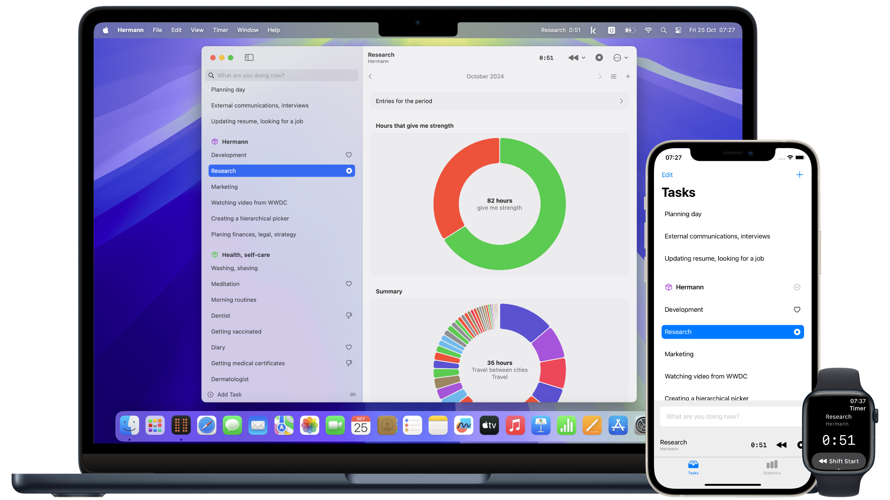

A time tracker without friction for Mac, iPhone and Apple Watch
Friction refers to interface barriers that make it difficult for you to specify your current task in time trackers. Hermann uses machine learning to predict your actions and enable one-touch selection.
Hermann allows you to answer the questions “where is the time of my life going?” and “am I doing the things that give me strength?” This app is not about making more money. It's about the meaning of life.
While Hermann is in public beta, you can use it for free through TestFlight.
Requires macOS 15 Sequoia, iOS 18, watchOS 11 or newer.
